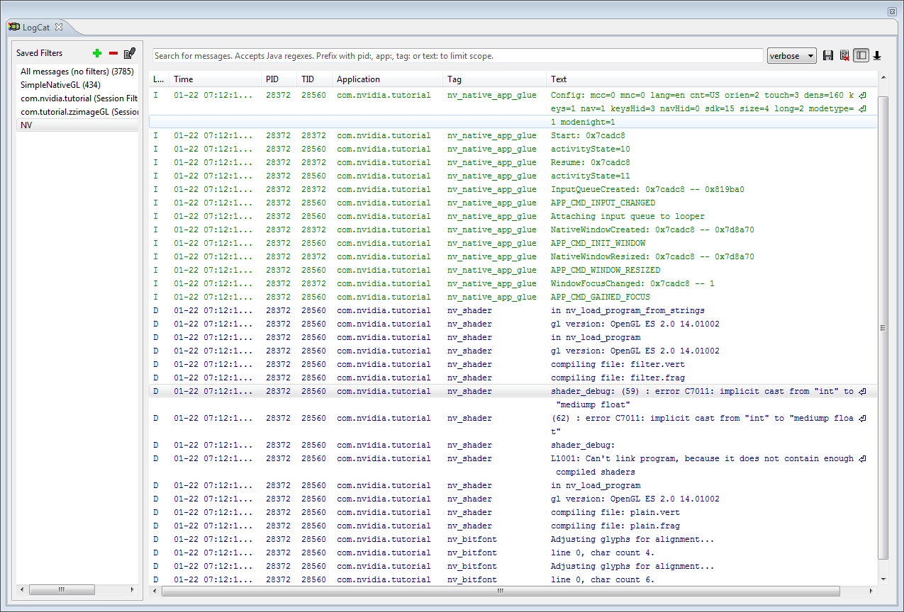

OpenGL ES provides a fast way to display the camera images, possibly after some image processing, and allows building simple user interfaces. In this section we only cover 2D graphics using OpenGL ES 2.0, for 3D graphics there are other tutorials available, as well as the NativeGlobe example provided in TADP. From now on, we’ll use GL as a shorthand for OpenGL ES 2.0. We also cover how to handle various Android events in a native program.
We first show how to import an existing native GL project into your workspace, and then we show you how to create the same project from scratch. For the latter, we will follow similar steps to those described in Creating a NativeActivity, in case you need a more in-depth overview.
Let’s start the first GL application by importing an existing project to Eclipse. Start by importing /tutorials/SimpleNativeGL project. Open Eclipse, select File > Import > Android > Existing Android Code into Workspace, and browse into the Root Directory (/tutorials/SimpleNativeGL). You can copy the files into the project directory in the workspace if you want by selecting one of the boxes. Then hit Finish.
If the project has the default name
rename the project (right-click the project and find the Rename option, its location may vary depending on the operating system, could be under Refactor)
to SampleNativeGL. Open the project in the Package Explorer.
The files and folders within the red rectangle are the ones you just imported, others were generated during the Import operation.
As this is a native project, select the C/C++ perspective.
By default all Android projects are Java projects, let’s convert ours to native by right-clicking the project in Package Explorer and selecting New > Convert to C/C++ Project. Select Project Type to be Makefile project and Toolchain to be Android GCC.
Sometimes the project might be imported with the wrong Android version. In the Project Explorer right-click on the project folder and choose Properties. In the Android tab, make sure that the version selected is at least Android 4.0.3 (API 15):
Build the project (right-click SimpleNativeGL > Build Project) and run it on device (right-click SimpleNativeGL > Run As > Android Application). Try tapping the device display and slide your finger along the display; the solid color that is displayed should vary depending on the touch location.
To learn how to create a project from scratch, let’s go through the steps necessary to create the project we imported in the previous section. If you imported the project already, right-click on the project name in the Project Explorer pane and click delete. If you copied the files into the workspace when importing the project, in the next window check the box Delete project contents from disk (cannot be undone) and make sure you’re deleting the correct project; in general be really careful when using this option since Eclipse does not move the project to the trash but rather deletes it completely. Finally click OK.
From the Java perspective, let’s create the new project:
Now we need to add native support:
Eclipse should now have switched to the C/C++ perspective. First let’s modify the manifest file. Open the AndroidManifest.xml file and switch to the AndroidManifest.xml tab at the bottom of the window to be able to see the actual xml code. Now replace the code within the application block with the lines highlighted below:
<manifest xmlns:android="http://schemas.android.com/apk/res/android"
package="com.nvidia.example.simplenativegl"
android:versionCode="1"
android:versionName="1.0" >
<uses-sdk
android:minSdkVersion="14"
android:targetSdkVersion="15" />
<!-- We do not have Java code. Therefore android:hasCode is set to false. -->
<application
android:hasCode="false"
android:label="@string/app_name" >
<!--
Our activity is the built-in NativeActivity framework class.
This will take care of integrating with our NDK code.
-->
<activity
android:name="android.app.NativeActivity"
android:configChanges="orientation|keyboard|keyboardHidden"
android:label="@string/app_name"
android:theme="@android:style/Theme.NoTitleBar.Fullscreen" >
<!-- Tell NativeActivity the name of our .so -->
<meta-data
android:name="android.app.lib_name"
android:value="SimpleNativeGL" />
<intent-filter>
<action android:name="android.intent.action.MAIN" />
<category android:name="android.intent.category.LAUNCHER" />
</intent-filter>
</activity>
</application>
</manifest>
Now open the Android.mk file from the jni folder and add the lines highlighted below:
LOCAL_PATH := $(call my-dir)
include $(CLEAR_VARS)
LOCAL_MODULE := SimpleNativeGL
LOCAL_SRC_FILES := SimpleNativeGL.cpp
LOCAL_LDLIBS := -llog -landroid -lEGL -lGLESv2
LOCAL_STATIC_LIBRARIES := android_native_app_glue
include $(BUILD_SHARED_LIBRARY)
$(call import-module, android/native_app_glue)
In addition to what we went over in the tutorial Creating a NativeActivity, we need to link against the EGL and GLESv2 libraries.
In order to make sure that our application will be fully optimized, let’s create an Application.mk file: right-click on the jni folder then New > File and set the name to Application.mk. Open the new file and add to it the line:
APP_ABI := armeabi-v7a
Now we need to populate the file SimpleNativeGL.cpp. Let’s start by including headers and creating macros to log events:
#include <jni.h>
#include <errno.h>
#include <EGL/egl.h>
#include <GLES2/gl2.h>
#include <android/sensor.h>
#include <android_native_app_glue.h>
#include <android/log.h>
#define LOGW(...) ((void)__android_log_print(ANDROID_LOG_WARN, "SimpleNativeGL", __VA_ARGS__))
#define LOGI(...) ((void)__android_log_print(ANDROID_LOG_INFO, "SimpleNativeGL", __VA_ARGS__))
Now let’s create a struct to share the current status between different functions, and let’s add placeholders for the functions we’ll need to implement for this simple example:
/**
* State of our app
*/
struct Engine
{
// Save in the engine a pointer to the Android app
struct android_app *app;
// EGL Display, surface, and context
EGLDisplay display;
EGLSurface surface;
EGLContext context;
// States and touch locations
bool animating;
int width;
int height;
int x_touch;
int y_touch;
};
/**
* Initialize an EGL context for the current display
*/
static int engine_init_display( struct Engine *engine ){}
/**
* Draw the current frame on the display
*/
static void engine_draw_frame( struct Engine *engine ){}
/**
* Tear down the EGL context currently associated with the display
*/
static void engine_term_display( struct Engine *engine ){}
/**
* Process the input event
*/
static int32_t engine_handle_input( struct android_app *app, AInputEvent *event ){}
/**
* Process the next main command
*/
static void engine_handle_cmd( struct android_app *app, int32_t cmd ){}
/**
* This is the main entry point of a native application that is using
* android_native_app_glue. It runs in its own thread, with its own
* event loop for receiving input events and doing other things.
*/
void android_main( struct android_app *app ){}
Now let’s implement the different functions starting with the main:
/**
* This is the main entry point of a native application that is using
* android_native_app_glue. It runs in its own thread, with its own
* event loop for receiving input events and doing other things.
*/
void android_main( struct android_app *app )
{
// Make sure glue isn't stripped
app_dummy();
// Initialize the engine.
// The engine stores the state and global variables of the application.
struct Engine engine;
memset( &engine, 0, sizeof( engine ) );
// The engine needs a pointer to app, e.g., to access the window data
engine.app = app;
// Link the app to the engine and attach callbacks.
// Store a pointer to the application engine for event handling.
app->userData = &engine;
// Callback for handling application status changes
app->onAppCmd = engine_handle_cmd;
// Callback for handling touch input
app->onInputEvent = engine_handle_input;
// The core of the main is an infinite loop which waits for events
// and redraws the frame when needed.
while( 1 )
{
// read all pending events
int events;
struct android_poll_source *source;
// If not animating, we will block forever waiting for events.
// If animating, we loop until all events are read, then continue
// to draw the next frame of animation.
while( ( ALooper_pollAll( engine.animating ? 0 : -1, NULL, &events, ( void ** ) &source ) ) >= 0 )
{
// Process this event.
// Depending on the event, app->onAppCmd or app->onInputEvent may be called.
if( source != NULL )
{
source->process( app, source );
}
// Check if we are exiting (e.g., user presses the back button)
if( app->destroyRequested != 0 )
{
engine_term_display( &engine );
return;
}
}
if( engine.animating )
{
// Done with events; draw next animation frame.
// Drawing is synched with the screen update rate, so there
// is no need to do timing here.
engine_draw_frame( &engine );
}
}
}
First, app_dummy() is called to make sure all the Android callbacks are not optimized away by the compiler (more about it here). Next, an instance of struct Engine is created to store the global data of this application, including a pointer back to struct android_app *app. app stores a pointer to the Engine, as well as pointers to two callbacks defined below. The core of this function is an infinite loop that iterates between handling events such as touches, and drawing a frame.
Before diving into the functions that perform the GL calls we need to implement the functions that handle the callback inputs:
/**
* Process the input event
*/
static int32_t engine_handle_input( struct android_app *app, AInputEvent *event )
{
// Get a local pointer to the engine that we stored in the application
struct Engine *engine = ( struct Engine * ) app->userData;
// Analyze the type of event
if( AInputEvent_getType( event ) == AINPUT_EVENT_TYPE_MOTION )
{
// If the user lifted the finger from the screen, stop updating
int32_t action = AMotionEvent_getAction( event );
if( action != AMOTION_EVENT_ACTION_MOVE )
{
engine->animating = false;
return 1;
}
// Otherwise get the touch position and set animation to true
engine->x_touch = AMotionEvent_getX( event, 0 );
engine->y_touch = AMotionEvent_getY( event, 0 );
engine->animating = true;
return 1;
}
return 0;
}
/**
* Process the next main command
*/
static void engine_handle_cmd( struct android_app *app, int32_t cmd )
{
// Get a local pointer to the engine that we stored in the application
struct Engine *engine = ( struct Engine * ) app->userData;
// Analyze the command
switch( cmd )
{
case APP_CMD_INIT_WINDOW:
// The window is being shown, get it ready
if( engine->app->window != NULL )
{
// Initialize the engine based on the current display
engine_init_display( engine );
// Start drawing
engine_draw_frame( engine );
}
break;
case APP_CMD_TERM_WINDOW:
// The window is being hidden or closed, clean it up
engine_term_display( engine );
break;
case APP_CMD_LOST_FOCUS:
// When our app loses focus, we stop animating
engine->animating = false;
break;
}
}
The GL calls happen in functions static int engine_init_display(struct Engine *engine), static void engine_draw_frame(struct Engine *engine), and static void engine_term_display(struct Engine *engine). The first one initializes GL context and drawing surface using the GL companion API EGL.
/**
* Initialize an EGL context for the current display
*/
static int engine_init_display( struct Engine *engine )
{
// initialize OpenGL ES and EGL
EGLDisplay display = eglGetDisplay( EGL_DEFAULT_DISPLAY );
eglInitialize( display, 0, 0 );
// Specify the attributes of the desired configuration.
// We select an EGLConfig with at least 8 bits per color component
// that is compatible with on-screen windows.
const EGLint attribs[] =
{ EGL_SURFACE_TYPE, EGL_WINDOW_BIT, EGL_BLUE_SIZE, 8, EGL_GREEN_SIZE, 8, EGL_RED_SIZE, 8, EGL_NONE };
// Here, the application chooses the configuration it desires.
// eglChooseConfig in general returns all the configurations compatible
// with the attributes passed. In this sample, we have a very simplified
// selection process, where we pick the first EGLConfig that matches
// our criteria (by setting the third argument to 1).
EGLConfig config;
EGLint numConfigs;
eglChooseConfig( display, attribs, &config, 1, &numConfigs );
// EGL_NATIVE_VISUAL_ID is an attribute of the EGLConfig that is
// guaranteed to be accepted by ANativeWindow_setBuffersGeometry().
// We can use it to make the ANativeWindow buffers to match.
EGLint format;
eglGetConfigAttrib( display, config, EGL_NATIVE_VISUAL_ID, &format );
// Set a native Android window to have the format configured by EGL
ANativeWindow_setBuffersGeometry( engine->app->window, 0, 0, format );
// Create EGL surface and context
EGLSurface surface = eglCreateWindowSurface( display, config, engine->app->window, NULL );
EGLContext context = eglCreateContext( display, config, NULL, NULL );
// Use the surface and context we just created and configure the engine
if( eglMakeCurrent( display, surface, surface, context ) == EGL_FALSE )
{
LOGW( "Unable to eglMakeCurrent" );
return -1;
}
// Get width and height of the surface
EGLint w, h;
eglQuerySurface( display, surface, EGL_WIDTH, &w );
eglQuerySurface( display, surface, EGL_HEIGHT, &h );
// Store the app variables so the callbacks can access the data
engine->display = display;
engine->context = context;
engine->surface = surface;
engine->width = w;
engine->height = h;
// Initialize GL state
glEnable( GL_CULL_FACE );
glDisable( GL_DEPTH_TEST );
return 0;
}
Now that we have initialized the engine we can implement the function to draw frames. In this simple example we will be just setting a solid background color based on the touch location: we set the green channel to zero, and the blue (red) channel is driven by the vertical (horizontal) position of the touch on the screen.
/**
* Draw the current frame on the display
*/
static void engine_draw_frame( struct Engine *engine )
{
if( engine->display == NULL ) { return; } // No display
// Set the clear color based on the touch location from the engine
glClearColor( ( ( float ) engine->x_touch ) / engine->width, // Red channel
0, // Green channel
( ( float ) engine->y_touch ) / engine->height, // Blue channel
1 ); // Alpha channel
// Clear the screen to the color we just set
glClear( GL_COLOR_BUFFER_BIT );
// Swap the buffers, which indicates we're done with rendering this frame
eglSwapBuffers( engine->display, engine->surface );
// LOGI( "Buffers swapped by eglSwapBuffers..." );
}
The last function that we need to implement cleans up the EGL structures at application exit:
/**
* Tear down the EGL context currently associated with the display
*/
static void engine_term_display( struct Engine *engine )
{
if( engine->display != EGL_NO_DISPLAY )
{
eglMakeCurrent( engine->display, EGL_NO_SURFACE, EGL_NO_SURFACE, EGL_NO_CONTEXT );
if( engine->context != EGL_NO_CONTEXT )
{
eglDestroyContext( engine->display, engine->context );
}
if( engine->surface != EGL_NO_SURFACE )
{
eglDestroySurface( engine->display, engine->surface );
}
eglTerminate( engine->display );
}
engine->animating = false;
engine->display = EGL_NO_DISPLAY;
engine->context = EGL_NO_CONTEXT;
engine->surface = EGL_NO_SURFACE;
}
In the previous example, we described how to create an application from scratch, using the GL API; for Tegra-based devices, NVIDIA offers a framework that greatly simplifies the process. (The framework will probably work on other Android devices too, but we haven’t tested that.) We will now implement a project that is very similar to the previous one, but we will employ this helper, to show its basic usage. The app will still change the background color based on the x and y position of the touches but, in addition to that, it will also overlay different text if the app is in focus or paused. In order to perform the latter, we will process the events generated by the UI. If the application is in focus we will display “Active mode!” and we will track the position of the touches. When the return button is pressed once, or the “Recent app” button is pressed, or the bottom right corner is pressed, the app will be considered paused, or out-of-focus, and the text will be changed to:
Auto-pause
Press back to quit
Tap window to resume
When the app is paused, unless a new event is generated, an additional 4 more frames are going to be rendered, and after that, nothing else will happen.
Let’s start. We first create a project (SimpleNativeGL_NV) the same way we did before. Follow the first steps described above up to the part where we modified the AndroidManifest.xml file. The only difference in the manifest file is the name we give to the library:
[...]
<!-- Tell NativeActivity the name of our .so -->
<meta-data android:name="android.app.lib_name"
android:value="SimpleNativeGL_NV" />
[...]
Now let’s modify the Android.mk file in the jni folder of the project:
LOCAL_PATH := $(call my-dir)
include $(CLEAR_VARS)
LOCAL_MODULE := SimpleNativeGL_NV
LOCAL_SRC_FILES := SimpleNativeGL_NV.cpp Engine.cpp
LOCAL_LDLIBS := -lc -lm -llog -landroid -ldl -lGLESv2 -lEGL
LOCAL_STATIC_LIBRARIES := nv_and_util nv_egl_util nv_bitfont nv_math nv_glesutil nv_hhdds nv_log nv_shader nv_file nv_thread
LOCAL_CFLAGS += -std=gnu++0x
include $(BUILD_SHARED_LIBRARY)
# Add the folder with the NVIDIA helper, assuming we are at the nvsample_workspace
$(call import-add-path, $(NVPACK_PATH)/TDK_Samples/tegra_android_native_samples_v10p10/libs/jni)
# Import the modules from the NVIDIA helper
$(call import-module, nv_and_util)
$(call import-module, nv_egl_util)
$(call import-module, nv_bitfont)
$(call import-module, nv_math)
$(call import-module, nv_glesutil)
$(call import-module, nv_hhdds)
$(call import-module, nv_log)
$(call import-module, nv_shader)
$(call import-module, nv_file)
$(call import-module, nv_thread)
In addition to what we did in the example we created in Creating a GL project from scratch, here we are just linking against the NVIDIA libraries and importing the corresponding modules. Note that we are assuming again that you are working in the $NVPACK_PATH/nvsample_workspace workspace. If not, you will have to change the pointer to the NVIDIA helper folder. Because we will create a class called Engine we added the corresponding source file to the list of LOCAL_SRC_FILES.
Also, we need the fonts for the text we will overlay on the screen. We can get them from the assets folder of other projects in the workspace. For instance, in the Project Explorer, expand the folder NativeBasic > assets. Copy the two *.abc and *.dds files to the assets folder of our project (in total, you should be copying 4 files). Dragging-and-dropping with holding ALT within Eclipse Project Explorer is probably the easiest way to do this.
Finally, to make sure that our application is fully optimized, we need the Application.mk. You can create it like we did in Creating a GL project from scratch,or copy it directly from the other project. Because we want to use smart pointers of the new C++ 11 STL, we need to add a line to indicate we will be using the GNU STL implementation:
APP_ABI := armeabi-v7a
APP_STL := gnustl_static
Note
The use of C++ 11 features, like std::unique_ptr requires the compiler flag -std=gnu++0x and GCC version 4.6, which is the default compiler in NDK r8b. The compiler flags are given under LOCAL_C_FLAGS in the Android.mk file.
We will now create a class expanding the Engine struct from the previous example, and we will move much of the code to it.
In the Project Explorer pane, right-click on the jni folder and then New > Class. In the Class name field, type Engine and then click Finish. Eclipse has now created for us both the header and source files for the class. Let’s start from the header file:
#ifndef __ENGINE_H
#define __ENGINE_H
// Includes for the NVIDIA helper libraries
#include <nv_and_util/nv_native_app_glue.h>
#include <nv_egl_util/nv_egl_util.h>
// Logging macros
#define APP_NAME "SimpleNativeGL_NV"
#define LOGD(...) ((void)__android_log_print(ANDROID_LOG_DEBUG,APP_NAME, __VA_ARGS__))
#define LOGI(...) ((void)__android_log_print(ANDROID_LOG_INFO, APP_NAME, __VA_ARGS__))
#define LOGW(...) ((void)__android_log_print(ANDROID_LOG_WARN, APP_NAME, __VA_ARGS__))
#define FRAMES_TO_RENDER 4
/**
* This is the engine which implements the required callback functions,
* as well as a few utility functions.
* This implementation relies on the NVIDIA utilities.
*/
class Engine
{
public:
/**
* The constructor saves a pointer to the engine and to the callback
* functions in the Android app. It also initializes the nv_shader library.
*/
Engine( NvEGLUtil& egl, struct android_app *app );
/**
* The destructor mainly frees the allocated BitFonts.
*/
~Engine();
/**
* The application can be active or paused. This function returns
* false when the application is paused.
*/
bool isActiveMode()
{
return mActiveMode;
}
/**
* Render the frame, after checking what the status of the Android app is.
* Interactible should be true if the app is running, it is active, focused,
* and has a valid surface.
*/
void updateFrame( bool interactible );
protected:
/**
* Wrapper to handle commands generated by the UI.
*/
static void handleCmdThunk( struct android_app *app, int32_t cmd );
/**
* Handle commands.
*/
void handleCommand( int cmd );
/**
* Wrapper to handle input events generated by the UI.
*/
static int32_t handleInputThunk( struct android_app *app, AInputEvent *event );
/**
* Handle inputs.
*/
int handleInput( AInputEvent *event );
/* Auxiliary functions */
/**
* Set mActiveMode; we use mActiveMode to keep track of whether the app is actually
* running or paused. Examples of when the app is paused is when the user has pressed
* the back button, the "Recent apps" button, or the time at the bottom right corner
* of the screen.
*/
void setActiveMode( bool running );
/**
* If the app's window had been resized returns true and forces the frame to be
* rendered.
*/
bool checkWindowResized();
/**
* Resets the number of frames that need to be rendered.
*/
void requestForceRender()
{
// Even when no events are generated, we required that the system still renders
// FRAMES_TO_RENDER frames.
mForceRender = FRAMES_TO_RENDER;
}
/*
* Check if we are done rendering frames.
*/
bool isForcedRenderPending()
{
// mForceRender is decremented every time a frame is rendered and
// reinitialized to FRAMES_TO_RENDER when a new event is generated
// by the UI
return mForceRender > 0;
}
/**
* This is the actual method which renders the frame.
* It returns false if either EGL was not ready to render or
* the UI could not be initialized.
*/
bool renderFrame( bool allocateIfNeeded );
/**
* Initialize the UI
* Returns true if the UI was initialized, false if the fonts could not be
* initialized.
*/
bool initUI();
/**
* If there is a pending window resize, perform it and return true.
*/
bool resizeIfNeeded();
/* Variables */
struct android_app *mApp; // Pointer to the Android app
NvEGLUtil &mEgl; // NvEGLUtil is the NVIDIA wrapper to EGL
bool mResizePending; // Is there a window-resize pending?
bool mActiveMode; // Is the app active or has it been paused?
bool mUiInitialized; // Has the UI been initialized?
void *mUiText[2]; // We need this variable to get a pointer to the bftext objects
int mTouchX, mTouchY; // Position of the touch event
int mForceRender; // This variable counts how many more frames we want
// to render in case no new requests are generated.
};
#endif // __ENGINE_H
The comments and the naming of methods and variables should be self-explanatory. Open Engine.cpp so we can look at the implementation of the different methods, starting with the includes, constructor and destructor:
#include "Engine.h"
// Includes for GL and EGL
#include <EGL/egl.h>
#include <EGL/eglplatform.h>
#include <GLES2/gl2.h>
// Includes for the NVIDIA helper libraries
#include <nv_and_util/nv_native_app_glue.h>
#include <nv_egl_util/nv_egl_util.h>
#include <nv_bitfont/nv_bitfont.h>
#include <nv_shader/nv_shader.h>
Engine::Engine( NvEGLUtil& egl, struct android_app *app )
: mEgl( egl ), mApp( app ), mResizePending( false ), mActiveMode( true ),
mForceRender( 4 ), mUiInitialized( false )
{
// Save a pointer to the engine in the Android app
app->userData = this;
// Save pointers to the implementation of the callback functions in the
// Android app
app->onAppCmd = &Engine::handleCmdThunk;
app->onInputEvent = &Engine::handleInputThunk;
// Initialize the nv_shader library
nv_shader_init( app->activity->assetManager );
// Initialize the pointers to the bftext objects
mUiText[0] = NULL;
mUiText[1] = NULL;
}
Engine::~Engine()
{
// Free the allocated BitFonts
NVBFTextFree( mUiText[1] );
NVBFTextFree( mUiText[0] );
NVBFCleanup();
}
In the code above we used some of the NVIDIA libraries, such as an EGL utility. There is no comprehensive documentation of the libraries, but the code is commented pretty well. Let’s study what the EGL utility is made of. Place the cursor on NvEGLUtil on the argument list of the Engine constructor and hit F3 (or CTRL-click [CMD-click on Mac]). This should take you to the definition of that object in nv_egl_util.h. If the indexer worked correctly, you could now do the same thing to toggle between the declaration and definition of some member function, such as swap(). You can always toggle between the header and implementation files with CTRL-TAB. To get indexer working for nv_egl_util.h, if you care, you’d need to go to Project Properties > C/C++ General > Paths and Symbols > Source Locations and link the folder to where the nv_egl_util.cpp file is (it is in $NVPACK_PATH/TDK_Samples/tegra_android_native_samples_v10p10/libs/jni/nv_egl_util). In any case, browsing these two files allows you to see how the NvEGLUtil class works.
So far, it is pretty much like before, with the exeption that we initialize the nv_shader library. Now we need to write the functions that handle commands from the UI. In the constructor we linked the app->onAppCmd callback to the method Engine::handleCmdThunk(); this method just gets a pointer to the engine object from the app and calls a method which actually handles the commands.
void Engine::handleCmdThunk( struct android_app *app, int32_t cmd )
{
// Get a pointer to the Engine we stored in the Android app
Engine *engine = ( Engine * ) app->userData;
if( engine ) { engine->handleCommand( cmd ); }
}
void Engine::handleCommand( int cmd )
{
switch( cmd )
{
case APP_CMD_INIT_WINDOW:
// The window is being shown, get it ready.
// Note that on ICS, the EGL size will often be correct for the new size here,
// but on HC it will not be. We need to defer checking the new res until the
// first render with the new surface! Fall through to the window resize case.
case APP_CMD_WINDOW_RESIZED:
// A command to resize the window was issued, we need to
// redraw it with its new size.
mEgl.setWindow( mApp->window );
requestForceRender();
break;
case APP_CMD_TERM_WINDOW:
// The window is being hidden or closed, clean it up.
mEgl.setWindow( NULL );
break;
case APP_CMD_GAINED_FOCUS:
// The app window gained focus we need to start rendering it.
requestForceRender();
break;
case APP_CMD_LOST_FOCUS:
// The app window lost focus so we need to pause it.
// Fall through to the command pause case.
case APP_CMD_PAUSE:
// Move out of active mode if we are in it. But if we are
// in another dialog mode, leave it as-is.
if( mActiveMode )
{
setActiveMode( false );
}
// Note that we still want to render in background.
requestForceRender();
break;
case APP_CMD_CONFIG_CHANGED:
// ICS does not appear to require this, but on GB phones,
// not having this causes rotation changes to be delayed or
// ignored when we're in a non-rendering mode like autopause.
// The forced renders appear to allow GB to process the rotation.
requestForceRender();
break;
}
}
Similarly, in the constructor we also linked the app->onInputEvent callback to the method Engine::handleInputThunk(). Finally the method Engine::handleInput() analyzes the event and either updates the touch positions or, if the event was a “back button” event, handles pausing the app or closing it.
/**
* Process the next input event.
*/
int32_t Engine::handleInputThunk( struct android_app *app, AInputEvent *event )
{
// Get a pointer to the Engine we stored in the Android app
Engine *engine = ( Engine * ) app->userData;
if( !engine ) { return 0; }
return engine->handleInput( event );
}
int Engine::handleInput( AInputEvent *event )
{
// We only handle motion events (touchscreen) and key (button/key) events
int32_t eventType = AInputEvent_getType( event );
if( eventType == AINPUT_EVENT_TYPE_MOTION )
{
int32_t action = AMOTION_EVENT_ACTION_MASK & AMotionEvent_getAction( ( const AInputEvent * ) event );
// A tap on the screen takes us out of autopause into active mode if
// we were paused. No other touch processing is done.
if( action == AMOTION_EVENT_ACTION_DOWN )
{
setActiveMode( true );
return 0;
}
mTouchX = AMotionEvent_getX( event, 0 );
mTouchY = AMotionEvent_getY( event, 0 );
return 1;
}
else if( eventType == AINPUT_EVENT_TYPE_KEY )
{
int32_t code = AKeyEvent_getKeyCode( ( const AInputEvent * ) event );
// If we are in active mode, we eat the back button and move into
// pause mode. If we are already in pause mode, we allow the back
// button to be handled by the OS, which means we'll be shut down.
if( ( code == AKEYCODE_BACK ) && mActiveMode )
{
setActiveMode( false );
return 1;
}
}
return 0;
}
Now let’s write the methods that perform the actual rendering of the frame. We will have an auxiliary method, Engine::updateFrame() that looks at the status of our application and decides whether we need to render or not.
void Engine::updateFrame( bool interactible )
{
if( interactible )
{
// Each frame, we check to see if the window has resized. While the
// various events we get _should_ cover this, in practice, it appears
// that the safest move across all platforms and OSes is to check at
// the top of each frame.
checkWindowResized();
// Time stands still when we're auto-paused, and we don't
// automatically render.
if( mActiveMode )
{
// This will try to set up EGL if it isn't set up.
// When we first set up EGL completely, we also load our GLES resources.
// If these are already set up or we succeed at setting them all up now, then
// we go ahead and render.
renderFrame( true );
}
else if( isForcedRenderPending() ) // forced rendering when needed for UI, etc.
{
// This forces to change the text when paused.
renderFrame( true );
}
}
else
{
// Even if we are not interactive, we may be visible, so we
// HAVE to do any forced renderings if we can. We must also
// check for resize, since that may have been the point of the
// forced render request in the first place!
// Basically it still renders even if the application is not in focus.
if( isForcedRenderPending() && mEgl.isReadyToRender( false ) )
{
checkWindowResized();
renderFrame( false );
}
}
}
The actual method that performs rendering has to first make sure that everything is ready (EGL ready and UI initialized), then it clears the buffer to the color selected with the touch position and renders the text:
bool Engine::renderFrame( bool allocateIfNeeded )
{
// Check that EGL is ready to render. If allocateIfNeeded
// try to also allocate the rendering surface and bind it
// to the context.
if( !mEgl.isReadyToRender( allocateIfNeeded ) )
{
return false;
}
// Make sure that the UI is initialized
if( !initUI() )
{
LOGW( "Could not initialize UI - assets may be missing!" );
ANativeActivity_finish( mApp->activity );
return false;
}
resizeIfNeeded();
// Set up viewport
glViewport( ( GLint ) 0, ( GLint ) 0,
( GLsizei )( mEgl.getWidth() ), ( GLsizei )( mEgl.getHeight() ) );
// Set the clear color...
glClearColor( ( ( float ) mTouchX ) / ( ( float ) mEgl.getWidth() ), 0,
( ( float ) mTouchY ) / ( ( float ) mEgl.getHeight() ), 1 );
// ...and clear.
glClear( GL_COLOR_BUFFER_BIT | GL_DEPTH_BUFFER_BIT );
/* Do some rendering here */
// ...
// Render the bitfont text overlaid here
NVBFTextRenderPrep();
void *uiText = mUiText[mActiveMode ? 1 : 0];
if( uiText ) { NVBFTextRender( uiText ); }
// Done rendering overlaid text.
NVBFTextRenderDone();
if( mForceRender > 0 ) { mForceRender--; }
// Swap the buffers, which indicates we're done with rendering this frame
mEgl.swap();
return true;
}
The magic for rendering with OpenGL ES now happens inside NVBFTextRender() function. If you browse to its declaration and definition as explained above, you can see that it is here that the maths for placing the text is calculated, the texture map containing the text characters is bound, and so forth. We will go deeper into all that in the next tutorial.
Let’s now look at the code for the method Engine::initUI(). It’s pretty simple, actually. We just initialize the bitfonts and set the properties for the text that we need to overlay. Note that EGL was initialized at the Engine construction, as the NvEGLUtil &mEgl was constructed. It’s also here that NVBFInitialize() is called, it sets up the vertex and fragment shaders that are used to render the text strings with GL.
bool Engine::initUI()
{
// The UI might have been initialized already
if( mUiInitialized ) { return true; }
// Initialize the NVIDIA bitfonts
const int NUM_FONTS = 2;
static NvBool fontsSplit[NUM_FONTS] = { 1, 1 }; // all are split
static const char *fontFiles[NUM_FONTS] = { "courier+lucida_256.dds", "utahcond+bold_1024.dds" };
if( NVBFInitialize( NUM_FONTS, (const char**) fontFiles, fontsSplit, 0 ) )
{
LOGW( "Could not initialize NvBitFont" );
return false;
}
// Allocate the text for the paused mode and set its properties
mUiText[0] = NVBFTextAlloc();
NVBFTextSetFont( mUiText[0], 2 ); // should look up by font file name
NVBFTextSetSize( mUiText[0], 32 );
NVBFTextSetColor( mUiText[0], NV_PC_PREDEF_WHITE );
NVBFTextSetString( mUiText[0], NVBF_COLORSTR_RED NVBF_STYLESTR_BOLD "Auto-pause:\n" NVBF_STYLESTR_NORMAL
NVBF_COLORSTR_BLUE "Press back to quit\nTap window to resume" );
// Allocate the text for the active mode and set its properties
mUiText[1] = NVBFTextAlloc();
NVBFTextSetFont( mUiText[1], 2 ); // should look up by font file name
NVBFTextSetSize( mUiText[1], 32 );
NVBFTextSetColor( mUiText[1], NV_PC_PREDEF_WHITE );
NVBFTextSetString( mUiText[1], NVBF_COLORSTR_GREEN "Active mode!" );
mUiInitialized = true;
return true;
}
Engine::resizeIfNeeded() basically just sets the height and width of the window and changes the text size accordingly:
bool Engine::resizeIfNeeded()
{
// Do we need to resize?
if( !mResizePending ) { return false; }
// Get the target height and width
int w = mEgl.getWidth();
int h = mEgl.getHeight();
int textHeight = ( w > h ) ? ( h / 16 ) : ( w / 16 );
// Change the resolution to the correct width and height
NVBFSetScreenRes( w, h );
// Also update the size of the characters
if( mUiText[0] )
{
NVBFTextSetSize( mUiText[0], textHeight );
NVBFTextCursorAlign( mUiText[0], NVBF_ALIGN_CENTER, NVBF_ALIGN_BOTTOM );
NVBFTextCursorPos( mUiText[0], w / 2, h / 2 );
}
if( mUiText[1] )
{
NVBFTextSetSize( mUiText[1], textHeight );
NVBFTextCursorAlign( mUiText[1], NVBF_ALIGN_CENTER, NVBF_ALIGN_CENTER );
NVBFTextCursorPos( mUiText[1], w / 2, h / 2 );
}
mResizePending = false;
return true;
}
And finally a couple of auxiliary functions:
void Engine::setActiveMode( bool running )
{
if( mActiveMode != running )
{
requestForceRender();
}
mActiveMode = running;
}
bool Engine::checkWindowResized()
{
if( mEgl.checkWindowResized() )
{
mResizePending = true;
requestForceRender();
LOGI( "Window size change %dx%d", mEgl.getWidth(), mEgl.getHeight() );
return true;
}
return false;
}
We are done with implementing the engine, we now only need to write the main function of our application. Fill SimpleNativeGL_NV.cpp in the jni folder with this code:
// EGL and GL includes
#include <EGL/egl.h>
#include <EGL/eglplatform.h>
#include <GLES2/gl2.h>
// NVIDIA helper includes
#include <nv_and_util/nv_native_app_glue.h>
#include <nv_egl_util/nv_egl_util.h>
#include <memory>
#include "Engine.h"
/**
* This is the main entry point of a native application that is using
* android_native_app_glue. It runs in its own thread, with its own
* event loop for receiving input events and doing other things.
*/
void android_main( struct android_app *app )
{
// Make sure glue isn't stripped.
app_dummy();
std::unique_ptr<NvEGLUtil> egl( NvEGLUtil::create() );
if( !egl )
{
// If we have a basic EGL failure, we need to exit immediately; nothing else we can do
nv_app_force_quit_no_cleanup( app );
return;
}
std::unique_ptr<Engine> engine( new Engine( *egl, app ) );
// Loop waiting for stuff to do.
while( nv_app_status_running( app ) )
{
// Read all pending events.
int ident;
int events;
struct android_poll_source *source;
// If not rendering, we will block forever waiting for events.
// If animating, we loop until all events are read, then continue
// to draw the next frame of animation.
while( ( ident = ALooper_pollAll( ( ( nv_app_status_focused( app ) && engine->isActiveMode() ) ? 1 : 250 ),
NULL, &events, ( void ** ) &source ) )
>= 0 )
{
// If we timed out, then there are no pending messages.
if( ident == ALOOPER_POLL_TIMEOUT ) { break; }
// Process this event.
if( source != NULL ) { source->process( app, source ); }
// Check if we are exiting. If so, dump out.
if( !nv_app_status_running( app ) ) { break; }
}
// Update the frame, which optionally updates time and animations
// and renders.
engine->updateFrame( nv_app_status_interactable( app ) );
}
}
Let’s try to compile the application: right-click on the project folder and select Build project. Even if you followed this tutorial to the letter, you will get errors:
../jni/SimpleNativeGL_NV.cpp:32: undefined reference to `Engine::Engine(NvEGLUtil&, android_app*)'
../jni/SimpleNativeGL_NV.cpp:64: undefined reference to `Engine::updateFrame(bool)'
../obj/local/armeabi-v7a/objs/SimpleNativeGL_NV/SimpleNativeGL_NV.o: In function `std::default_delete<Engine>::operator()(Engine*) const':
../android-ndk-r8b/sources/cxx-stl/gnu-libstdc++/4.6/include/bits/unique_ptr.h:63: undefined reference to `Engine::~Engine()'
But we did include all the necessary includes! And in fact if you CTRL + click on the name of the class in the SimpleNativeGL_NV.cpp file, Eclipse will take you to the Engine.h file... The problem is that we didn’t include all the source files in the Android.mk file, so the compiler does not know that Engine.cpp is part of the project. However, since we don’t want to have to modify that file every time we add a new class we will use wildcards instead. We will replace the line:
LOCAL_SRC_FILES := SimpleNativeGL_NV.cpp Engine.cpp
with:
MY_PREFIX := $(LOCAL_PATH)
MY_SOURCES := $(wildcard $(LOCAL_PATH)/*.cpp)
MY_SOURCES += $(wildcard $(LOCAL_PATH)/*.c)
LOCAL_SRC_FILES += $(MY_SOURCES:$(MY_PREFIX)%=%)
Now let’s run the application. Right-click on the project folder and select Run as > Android Application. You should see the text “Active!” on the screen. Drag your finger around. Notice that if you click on the back button, for instance, the text will change to reflect that the application has been paused.
This concludes our second GL tutorial.
In this third and last GL tutorial we will expand the previous tutorial to explore the use of shaders. We will create an application which will load an image as a texture; depending on which button the user presses, we will show either the texture loaded or a filtered version of it. For simplicity we will implement a Sobel filter along the vertical diretion of the image. In addition, we also display the time spent in active mode by the app; this counter will stop when the application is paused. To get an idea, these are screenshots for the two states:
We assume that you have the previous project in your workspace already, and we will build on it. If you don’t have it, please import the SimpleNativeGL_NV project from the tutorials folder.
First we will create the background texture from a regular image. We will need to create a DDS file.
Note
DDS, (DirectDraw Surface) is a compressed picture format whose main advantage over standard jpeg or png formats is that it is not decompressed before it’s loaded in memory and is then decompressed in hardware at access time. Standard image files are usually decompressed (in software) before they are loaded into memory, and use more space.
To manipulate DDS files you can use the tools of your choice. GIMP plus the DDS plugin is one option. NVIDIA also provides a set of basic tools for Windows, we will start there. You can download the DDS utilities, and convert this image typing in a shell:
nvdx -name Claw3_1280x800.jpg -output nvidia_green.dds
(Note that the input image does not necessarily need to be *.jpeg, but there are some constraints as far as the width and height of the input image go). On Ubuntu you can install the gimp-dds package, open Claw3_1280x800.jpg using GIMP and save it as nvidia_green.dds selecting DXT5 compression. Now copy nvidia_green.dds in your project’s assets folder.
Next we want to create the shaders, one to render the original texture and one to render the Sobel image. We need to create 4 different files in the assets folder (from the Project Explorer pane, right-click on the assets folder, then New > File):
plain.vert
plain.frag
filter.vert
filter.frag
We will draw a 2D rectangle with vertices (0,0), (1,0), (1,1) and (0,1) to render the texture on screen. The texture coordinates for each vertex are the same as their position, drawing the entire texture into the 2D rectangle. The vertex shader will map each vertex of the rectangle to clip coordinates in the range [-1,1] on each axis. The vertex shaders are going to be identical for both the filtered and the original images. Open plain.vert and fill it with this code (and do the same for filter.vert):
attribute vec2 aPos; // Position, in screen coordinates, passed as an attribute.
attribute vec2 aUV; // Position, in texture coordinates, passed as an attribute.
varying vec2 vTexCoord; // Texture coordinates to be passed as varying to
// the fragment shader.
uniform vec2 uViewMin; // Bottom left corner of the rectangle in clip coordinates
uniform vec2 uViewDim; // x,y dimensions of the rectangle in clip coordinates
/*
* This vertex shader maps a 2D vertex to clip coordinates coordinates in the
* range specified by uViewMin and uViewDim
*/
void main()
{
// Convert to clip coordinates.
gl_Position = vec4( uViewMin.x + aPos.x * uViewDim.x, uViewMin.y + aPos.y * uViewDim.y, 0.0, 1.0 );
// Pass the texture coordinates untouched.
vTexCoord = aUV;
}
Basically this vertex shader maps the 2D rectangle to a region of the clip coordinate space.
The fragment shader to render the original image is very simple too, as it only sets gl_FragColor to the value of the texture at the corresponding position:
precision lowp float; // Use low precision for floats.
uniform sampler2D uTex; // The texture sampler.
varying vec2 vTexCoord; // Texture coordinates.
/*
* This shader just shows the texture on the screen, without performing any
* processing to it. Therefore, just set the color of the fragment to the
* same as in the texture.
*/
void main()
{
// Look up the texture and set the fragment color
// to the same value of the texture at the same location.
gl_FragColor = texture2D( uTex, vTexCoord );
}
The next step is to implement the fragment shader that performs Sobel filtering. Open the filt.frag fragment shader and paste in the following code:
precision mediump float; // Use medium precision for floats.
uniform vec2 uD; // Step size corresponding to one pixel in the texture.
uniform sampler2D uTex; // The texture sampler.
varying vec2 vTexCoord; // Texture coordinates.
/*
* This very simple fragment performs a y gradient (using Sobel filter)
* to the green channel of the texture.
*/
void main()
{
// The origin is in the bottom-left corner, with the y axis
// pointing up, and the texture coordinates go from 0 to 1.
// Let's accumulate fragment color using a vertical Sobel filter,
// with the following weights:
//
// -1 -2 -1
// 0 0 0
// 1 2 1
//
// We get the colors by doing lookups in the texture map with
// correct offsets.
gl_FragColor = texture2D( uTex, vTexCoord + vec2( -uD.x, -uD.y ) );
gl_FragColor += 2 * texture2D( uTex, vTexCoord + vec2( 0.0, -uD.y ) );
gl_FragColor += texture2D( uTex, vTexCoord + vec2( uD.x, -uD.y ) );
gl_FragColor -= texture2D( uTex, vTexCoord + vec2( -uD.x, uD.y ) );
gl_FragColor -= 2 * texture2D( uTex, vTexCoord + vec2( 0.0, uD.y ) );
gl_FragColor -= texture2D( uTex, vTexCoord + vec2( uD.x, uD.y ) );
// ... and compute the color of this fragment (we set alpha to 1).
gl_FragColor.r = gl_FragColor.b = gl_FragColor.g;
gl_FragColor.a = 1.0;
}
We are done with the shaders implementation. Now we will add a couple of classes to our project. Right-click on the jni folder under your project in the Project Explorer pane and select New > Class. Call it RectShader (unselect the Namespace checkbox if necessary). We will use this class to load and compile the shaders. In fact we will create one object of this class per shader. An instance of the RectShader class will compute the uniforms for the vertex shader based on the current screen size and the choice of stretching or preserving the image aspect ratio. When stretching is selected the 2D rectangle is mapped to the entire clip coordinates range. If we choose to keep the aspect ratio, the corresponding origin and size of the rectangle in clip space coordinates is computed and assigned to the uViewMin and uViewDim uniforms. The header file of our class will be:
#ifndef RECT_SHADER_H_
#define RECT_SHADER_H_
#include <GLES2/gl2.h>
class RectShader
{
public:
enum ImageRowStorage
{
// First byte in memory is top row
STORAGE_TOP_FIRST = 1,
// First byte in memory is bottom row
STORAGE_BOTTOM_FIRST = 2
};
enum ImageAspectRatio
{
ASPECT_RATIO_KEEP = 1,
ASPECT_RATIO_STRETCH = 2
};
/*
* Load, compile, and initialize the shader.
*/
RectShader( const char *shaderName );
/*
* Destructor.
*/
virtual ~RectShader();
/*
* Set the attributes of the shader.
*/
virtual void bind( const GLfloat vertices[8], const GLfloat uvs[8] );
/*
* Set the viewport aspect ratio
*/
virtual void setViewportAspectRatio( float width, float height );
/*
* To be called when the image size changes. Set image size, which
* row is zero, and if we want to keep the aspect ratio or fit the image
*/
virtual void setImageSize( float width, float height,
ImageRowStorage zeroRow = STORAGE_TOP_FIRST,
ImageAspectRatio aspect = ASPECT_RATIO_STRETCH );
/*
* Returns the origin of the rectangle in viewport coordinates
*/
void getOrigUniform( GLfloat origin[2] ) const;
/*
* Returns the dimensions of the rectangle in viewport coordinates
*/
void getDimUniform( GLfloat dim[2] ) const;
protected:
/* Functions */
/*
* Computes the viewport region the current image will take.
*/
void updateClipRegion();
/* Variables */
GLint mProgram; // The shader
GLint mPosAttrib; // Attribute for the surface corners in screen coordinates
GLint mUvAttrib; // Attribute for the surface corners in GL coordinates
GLint mDUniform; // uD uniform location
GLint mViewOrigUniform; // uViewOrig uniform location
GLint mViewDimUniform; // uViewDim uniform location
GLfloat mViewOrig[2]; // Current clip coordinates rectangle origin
GLfloat mViewDim[2]; // Current clip coordinates rectangle dimension
GLfloat mTexelDelta[2]; // Current texel delta value
float mRectAspectRatio; // The rectangle aspect ratio w / h
float mViewportAspectRatio; // The viewport aspect ratio w / h
ImageRowStorage mZeroRowPos; // Location of zero row (top or bottom)
ImageAspectRatio mAspectBehavior; // Keep or stretch aspect ratio.
};
#endif /* RECT_SHADER_H_ */
Now let’s move to RectShader.cpp. After adding the necessary includes:
#include "RectShader.h"
#include <GLES2/gl2ext.h>
// NVIDIA helper include
#include <nv_shader/nv_shader.h>
Let’s look at the constructor. Basically the constructor takes the shader’s file name; it then loads and compiles the program and caches the location of its attributes and uniforms. Finally, it initializes the rectangle and screen aspect ratio to default values. The aspect ratios will be recomputed every time either the screen or the image size change. We will have an object for each shader so that these initialization operations are only performed once:
RectShader::RectShader( const char *shaderName )
{
// Load the fragment and vertex shaders.
mProgram = nv_load_program( shaderName );
// Compile, link, and attach the shader to the program.
glUseProgram( mProgram );
// Get pointers to the attributes in the program.
mPosAttrib = glGetAttribLocation( mProgram, "aPos" );
mUvAttrib = glGetAttribLocation( mProgram, "aUV" );
// Set up the texture sampler to texture unit 0
GLint texUni = glGetUniformLocation( mProgram, "uTex" );
glUniform1i( texUni, 0 );
// Get the location of the uniforms we will be udpating
mViewOrigUniform = glGetUniformLocation( mProgram, "uViewMin" );
mViewDimUniform = glGetUniformLocation( mProgram, "uViewDim" );
mDUniform = glGetUniformLocation( mProgram, "uD" );
// Initialize some default values for aspect ratio and uniforms.
mViewportAspectRatio = 1.0f;
mRectAspectRatio = 1.0f;
mTexelDelta[0] = mTexelDelta[1] = 1.0f;
mZeroRowPos = STORAGE_TOP_FIRST;
mAspectBehavior = ASPECT_RATIO_KEEP;
updateViewportRegion();
}
RectShader::bind() actually activates the shader (via the call to glUseProgram()), sets the attributes to the arguments passed to the function and the uniforms to the values that have already been computed.
void RectShader::bind( const GLfloat vertices[8], const GLfloat uvs[8] )
{
// Install the program object as a part of the current rendering state.
glUseProgram( mProgram );
// Disable VBO's (vertex buffer objects) for attributes.
glBindBuffer( GL_ARRAY_BUFFER, 0 );
glBindBuffer( GL_ELEMENT_ARRAY_BUFFER, 0 );
// Set the attribute mPosAttrib with the vertices in the screen coordinates...
glVertexAttribPointer( mPosAttrib, 2, GL_FLOAT, GL_FALSE, 0, vertices );
// ... and enable it.
glEnableVertexAttribArray( mPosAttrib );
// Set the attribute mUvAttrib with the vertices in the GL coordinates...
glVertexAttribPointer( mUvAttrib, 2, GL_FLOAT, GL_FALSE, 0, uvs );
// ... and enable it.
glEnableVertexAttribArray( mUvAttrib );
// Update the uniforms
glUniform2f( mViewOrigUniform, mViewOrig[0], mViewOrig[1] );
glUniform2f( mViewDimUniform, mViewDim[0] , mViewDim[1] );
glUniform2f( mDUniform, mTexelDelta[0], mTexelDelta[1] );
}
The vertex buffer objects (VBO) are a caching mechanism which allows to keep the vertex data in the high-peformance graphics memory and render directly from there, removing the need to resend the data every time a primitive is drawn. In this example, we are disabling VBOs since the number of vertices small.
We now add functions to be called when the screen size or the image size change. These functions update the aspect ratios and call updateClipRegion() to compute the new values for the uniforms.
void RectShader::setViewportAspectRatio( float width, float height)
{
// Update the viewport aspect ration
mViewportAspectRatio = width / height;
// Update the viewport region the image will cover.
updateCliptRegion();
}
void RectShader::setImageSize( float width, float height, ImageRowStorage zeroRowPos, ImageAspectRatio aspect )
{
// Update the rectangle aspect ratio
mRectAspectRatio = width / height;
mZeroRowPos = zeroRowPos;
mAspectBehavior = aspect;
// Update the texel delta.
mTexelDelta[0] = 1.0f / width;
mTexelDelta[1] = 1.0f / height;
// Update the viewport region the image will cover.
updateClipRegion();
}
The updateClipRegion function computes the new clip coordinates area that the rectangle will take based on the choice to keep the aspect ratio of the image or stretch it to fill the entire screen. In addition, if the top row is stored first in memory (as it is usually for images), we flip the vertical axis. This is because OpenGL assumes the first byte in the image is the bottom row. See the glTexImage2D reference for more details.
void RectShader::updateClipRegion()
{
if (mAspectBehavior == ASPECT_RATIO_KEEP)
{
if ( mViewportAspectRatio > mRectAspectRatio )
{
// Viewport is wider than rectangle
// Use entire viewport height and clip width
mViewOrig[0] = -1.0f + (mViewportAspectRatio - mRectAspectRatio) / 2.0f;
mViewOrig[1] = -1.0f;
mViewDim[0] = 2.0f - (mViewportAspectRatio - mRectAspectRatio);
mViewDim[1] = 2.0f;
}
else
{
// Viewport is taller than rectangle
// Use entire viewport width and clip height
mViewOrig[0] = -1.0f;
mViewOrig[1] = -1.0f + (1.0f / mViewportAspectRatio - 1.0f / mRectAspectRatio) / 2.0f;
mViewDim[0] = 2.0f;
mViewDim[1] = 2.0f - (1.0f / mViewportAspectRatio - 1.0f / mRectAspectRatio);
}
}
else
{
mViewOrig[0] = mViewOrig[1] = -1.0f;
mViewDim[0] = mViewDim[1] = 2.0f;
}
// If zero row is at the top, we need to flip the vertical signs
if ( mZeroRowPos == STORAGE_TOP_FIRST )
{
mViewOrig[1] = -mViewOrig[1];
mViewDim[1] = -mViewDim[1];
}
}
Finally, we add to functions to return the values of the computed uniforms. We will pass these values to other shaders when we draw features on top of the image in the next section.
void RectShader::getOrigUniform(GLfloat origin[2]) const
{
origin[0] = mViewOrig[0];
origin[1] = mViewOrig[1];
}
void RectShader::getDimUniform(GLfloat dim[2]) const
{
dim[0] = mViewDim[0];
dim[1] = mViewDim[1];
}
In the destructor we only need to delete the program and we’re done:
RectShader::~RectShader()
{
// Delete the program object
glDeleteProgram( mProgram );
}
Now we need one more class. Create a class called DrawRect, which will select the correct shader to use and will perform the actual rendering. The header file is really simple and it should only contain the following code:
#ifndef DRAW_RECT_H
#define DRAW_RECT_H
#include <GLES2/gl2.h>
class RectShader;
class DrawRect
{
public:
DrawRect();
/*
* Set what shader should be used to render the texture.
*/
void setShader( RectShader *shader );
/*
* Render the texture.
*/
void draw( GLint tex );
private:
RectShader *mShader; // Pointer to the current shader
};
#endif
The cpp file is very straight-forward too:
#include "DrawRect.h"
#include "RectShader.h"
static GLushort indices[4] = { 0, 1, 2, 3 };
static GLfloat vertices[8] = { 1.0f, 0.0f,
0.0f, 0.0f,
1.0f, 1.0f,
0.0f, 1.0f };
static GLfloat uvs[8] = { 1.0f, 0.0f,
0.0f, 0.0f,
1.0f, 1.0f,
0.0f, 1.0f };
DrawRect::DrawRect()
{
mShader = NULL;
}
void DrawRect::setShader( RectShader *shader )
{
mShader = shader;
}
void DrawRect::draw( GLint tex )
{
// Initialize the shader.
mShader->bind( vertices, uvs );
// Select the active texture unit.
glActiveTexture( GL_TEXTURE0 );
// Bind our texture to the texturing target.
glBindTexture( GL_TEXTURE_2D, tex );
// Perform the actual drawing.
glDrawElements( GL_TRIANGLE_STRIP, 4, GL_UNSIGNED_SHORT, indices );
}
Now we need to modify the Engine class. First, in the header file, we need to add a couple of includes:
#include <nv_ui/nv_ui_rect.h>
#include <memory>
#include <vector>
#include "DrawRect.h"
#include "RectShader.h"
Then we need to change updateFrame to take a time step argument, and add a method that advances time:
void updateFrame( bool interactible, long deltaTime );
/**
* Advance the time counter by the amount of time elapsed.
*/
void advanceTime( long deltaTime )
{
mTimeVal += deltaTime * 0.001;
}
Finally we need a few member variables:
// Texture and shaders
GLuint mImgTexture;
std::unique_ptr<DrawRect> mDrawRect;
std::unique_ptr<RectShader> mRectShader[2];
// Variables for the UI
NvUIRect mUiButtonZone[2];
void *mClockText;
void *mUiPauseText;
void *mUiButton[2];
int mHitButton;
double mTimeVal;
But we are not going to use a couple of the old variables so you can remove the following:
void *mUiText[2];
int mTouchX, mTouchY;
Now we need to change the implementation of a few functions in the cpp file, but first we need to add an include and define a couple of colors for the UI:
#include <nv_glesutil/nv_images.h>
// Define packed colors
NvPackedColor activeColor = NV_PACKED_COLOR( 250, 180, 50, 255 );
NvPackedColor deactiveColor = NV_PACKED_COLOR( 255, 255, 255, 255 );
The constructor and destructor aren’t changed much, we just need to initialize a bunch of different UI components and free them:
Engine::Engine( NvEGLUtil & egl, struct android_app *app )
: mEgl( egl ), mApp( app ), mResizePending( false ), mActiveMode( true ),
mForceRender( FRAMES_TO_RENDER ), mUiInitialized( false )
{
// Save a pointer to the engine in the Android app
app->userData = this;
// Save pointers to the implementation of the callback functions in the
// Android app
app->onAppCmd = &Engine::handleCmdThunk;
app->onInputEvent = &Engine::handleInputThunk;
// Initialize the nv_shader library
nv_shader_init( app->activity->assetManager );
// Initialize all the UI components
mClockText = NULL;
mUiPauseText = NULL;
mUiButton[0] = NULL;
mUiButton[1] = NULL;
mHitButton = 0;
// Initialize the mDrawRect and mRectShader objects
mDrawRect = NULL;
mRectShader[0] = NULL;
mRectShader[1] = NULL;
// Initialize the texture
mImgTexture = 0;
// Initialize the time counter
mTimeVal = 0.0;
}
Engine::~Engine()
{
// Free the allocated BitFonts
NVBFTextFree( mUiButton[0] );
NVBFTextFree( mUiButton[1] );
NVBFTextFree( mUiPauseText );
NVBFTextFree( mClockText );
NVBFCleanup();
// Delete the texture
glDeleteTextures( 1, &mImgTexture );
}
The method Engine::handleInput() needs to be changed to account for the fact that, instead of tracking the touch positions, we now need to detect and save which button has been pressed by the user:
int Engine::handleInput( AInputEvent *event )
{
//We only handle motion events (touchscreen) and key (button/key) events
int32_t eventType = AInputEvent_getType( event );
if( eventType == AINPUT_EVENT_TYPE_MOTION )
{
int32_t action = AMOTION_EVENT_ACTION_MASK & AMotionEvent_getAction( ( const AInputEvent * )event );
int32_t mx = AMotionEvent_getX( event, 0 );
int32_t my = AMotionEvent_getY( event, 0 );
if( isActiveMode() )
{
// Check if the touch was inside of the first button...
if( mUiButtonZone[0].inside( mx, my ) ) { mHitButton = 0; }
// ... or the second
else if( mUiButtonZone[1].inside( mx, my ) ) { mHitButton = 1; }
}
else
{
// A tap on the screen takes us out of autopause into active mode if
// we were paused. No other touch processing is done.
if( action == AMOTION_EVENT_ACTION_DOWN )
{
setActiveMode( true );
return 0;
}
}
return 1;
}
else if( eventType == AINPUT_EVENT_TYPE_KEY )
{
int32_t code = AKeyEvent_getKeyCode( ( const AInputEvent * ) event );
// if we are in active mode, we eat the back button and move into
// pause mode. If we are already in pause mode, we allow the back
// button to be handled by the OS, which means we'll be shut down
if( ( code == AKEYCODE_BACK ) && mActiveMode )
{
setActiveMode( false );
return 1;
}
}
return 0;
}
In Engine::updateFrame() we only need to add a couple of lines of code to advance the clock:
void Engine::updateFrame( bool interactible, long deltaTime )
{
if( interactible )
{
// Each frame, we check to see if the window has resized. While the
// various events we get _should_ cover this, in practice, it appears
// that the safest move across all platforms and OSes is to check at
// the top of each frame
checkWindowResized();
// Time stands still when we're auto-paused, and we don't
// automatically render
if( mActiveMode )
{
// The time needs to advance in active mode.
advanceTime( deltaTime );
// This will try to set up EGL if it isn't set up
// When we first set up EGL completely, we also load our GLES resources
// If these are already set up or we succeed at setting them all up now, then
// we go ahead and render.
renderFrame( true );
}
else if( isForcedRenderPending() ) // forced rendering when needed for UI, etc.
{
// This forces to render.
renderFrame( true );
}
}
else
{
// Even if we are not interactible, we may be visible, so we
// HAVE to do any forced renderings if we can. We must also
// check for resize, since that may have been the point of the
// forced render request in the first place!
if( isForcedRenderPending() && mEgl.isReadyToRender( false ) )
{
checkWindowResized();
renderFrame( false );
}
}
}
Engine::renderFrame() is very similar to the previous example as well, but we need to select the shader based on the button that was pressed, and render the button (change colors depeding on selection) and the clock:
bool Engine::renderFrame( bool allocateIfNeeded )
{
// Check that EGL is ready to render. If allocateIfNeeded
// try to also allocate the rendering surface and bind it
// to the context.
if( !mEgl.isReadyToRender( allocateIfNeeded ) )
{
return false;
}
// Make sure that the UI is initialized
if( !initUI() )
{
LOGW( "Could not initialize UI - assets may be missing!" );
ANativeActivity_finish( mApp->activity );
return false;
}
resizeIfNeeded();
// Set up viewport
glViewport( ( GLint )0, ( GLint )0,
( GLsizei )( mEgl.getWidth() ), ( GLsizei )( mEgl.getHeight() ) );
// Clear buffers as necessary
glClear( GL_COLOR_BUFFER_BIT | GL_DEPTH_BUFFER_BIT );
/* Do some rendering here */
// Based on the button that is selected choose the shader that should be used...
mDrawRect->setShader( mRectShader[mHitButton].get() );
// ... and pass the texture to the shader.
mDrawRect->draw( mImgTexture );
// Render the rendering bitfont text overlaid here.
NVBFTextRenderPrep();
// Update the clock.
if( mClockText )
{
// Set the correct color depending on the mActiveMode
NVBFTextSetMultiplyColor( mClockText,
mActiveMode ? activeColor : deactiveColor );
NVBFTextRender( mClockText );
// We update the clock text >after< rendering, so it will change on pause.
int mins = mTimeVal / 60;
float secs = ( float )mTimeVal - mins * 60;
char str[32];
sprintf( str, "%03d:%05.2f", mins, secs );
NVBFTextSetString( mClockText, str );
}
// Render the buttons.
if( !mActiveMode )
{
NVBFTextRender( mUiPauseText );
}
else
{
NVBFTextSetMultiplyColor( mUiButton[mHitButton], activeColor );
NVBFTextSetMultiplyColor( mUiButton[( mHitButton + 1 ) % 2], deactiveColor );
NVBFTextRender( mUiButton[0] );
NVBFTextRender( mUiButton[1] );
}
// Done rendering overlaid text.
NVBFTextRenderDone();
if( mForceRender > 0 ) { mForceRender--; }
// Swap the buffers, which indicates we're done with rendering this frame
mEgl.swap();
return true;
}
In the methods Engine::initUI() and Engine::resizeIfNeeded() we just need to allocate or update different UI components or objects:
bool Engine::initUI()
{
// The UI might have been initialized already
if( mUiInitialized ) { return true; }
LOGD( "Initializing UI" );
// Initialize the NVIDIA bitfonts
const int NUM_FONTS = 2;
static NvBool fontsSplit[NUM_FONTS] = {1, 1}; // all are split
static const char * fontFiles[NUM_FONTS] = { "courier+lucida_256.dds", "utahcond+bold_1024.dds" };
if( NVBFInitialize( NUM_FONTS, ( const char ** )fontFiles, fontsSplit, 0 ) )
{
LOGW( "Could not initialize NvBitFont" );
return false;
}
// Allocate the text for the clock and set its properties
mClockText = NVBFTextAlloc();
NVBFTextSetFont( mClockText, 1 ); // should look up by font file name.
NVBFTextSetSize( mClockText, 32 );
NVBFTextSetColor( mClockText, NV_PC_PREDEF_WHITE );
NVBFTextSetString( mClockText, "000:00.00" );
// Allocate the text for the text of the autopause mode and set its properties
mUiPauseText = NVBFTextAlloc();
NVBFTextSetFont( mUiPauseText, 2 ); // should look up by font file name.
NVBFTextSetSize( mUiPauseText, 32 );
NVBFTextSetColor( mUiPauseText, NV_PC_PREDEF_WHITE );
NVBFTextSetString( mUiPauseText,
NVBF_COLORSTR_RED NVBF_STYLESTR_BOLD "Auto-pause:\n" NVBF_STYLESTR_NORMAL
NVBF_COLORSTR_BLUE "Press back to quit\nTap window to resume" );
// UI Buttons
mUiButton[0] = NVBFTextAlloc();
NVBFTextSetFont( mUiButton[0], 2 ); // should look up by font file name.
NVBFTextSetSize( mUiButton[0], 48 );
NVBFTextSetColor( mUiButton[0], NV_PC_PREDEF_WHITE );
NVBFTextSetShadow( mUiButton[0], 5, NV_PC_PREDEF_BLACK );
NVBFTextSetString( mUiButton[0], NVBF_STYLESTR_BOLD "ON" );
mUiButton[1] = NVBFTextAlloc();
NVBFTextSetFont( mUiButton[1], 2 ); // should look up by font file name.
NVBFTextSetSize( mUiButton[1], 48 );
NVBFTextSetColor( mUiButton[1], NV_PC_PREDEF_WHITE );
NVBFTextSetShadow( mUiButton[1], 5, NV_PC_PREDEF_BLACK );
NVBFTextSetString( mUiButton[1], NVBF_STYLESTR_BOLD "OFF" );
// Set the correct button as active.
mHitButton = 1;
NVBFTextSetMultiplyColor( mUiButton[mHitButton], activeColor );
// Load the texture image
mImgTexture = NvCreateTextureFromDDSEx( "nvidia_green.dds", false, false, NULL, NULL, NULL, NULL );
// Allocate the objects
mDrawRect.reset( new DrawRect );
mRectShader[0].reset( new RectShader( "filter" ) );
mRectShader[0]->setImageSize( 1366.0, 720.0,
RectShader::STORAGE_TOP_FIRST, RectShader::ASPECT_RATIO_STRETCH );
mRectShader[1].reset( new RectShader( "plain" ) );
mRectShader[1]->setImageSize( 1366.0, 720.0,
RectShader::STORAGE_TOP_FIRST, RectShader::ASPECT_RATIO_STRETCH );
mUiInitialized = true;
return true;
}
bool Engine::resizeIfNeeded()
{
// Do we need to resize?
if( !mResizePending ) { return false; }
// Get the target height and width
int w = mEgl.getWidth();
int h = mEgl.getHeight();
int textHeight = ( w > h ) ? ( h / 16 ) : ( w / 16 );
// Change the resolution to the correct width and height
NVBFSetScreenRes( w, h );
// Also update the size of the characters and their location
if( mClockText )
{
NVBFTextSetSize( mClockText, textHeight );
NVBFTextCursorAlign( mClockText, NVBF_ALIGN_LEFT, NVBF_ALIGN_TOP );
NVBFTextCursorPos( mClockText, 10, 10 );
}
if( mUiPauseText )
{
NVBFTextSetSize( mUiPauseText, textHeight );
NVBFTextCursorAlign( mUiPauseText, NVBF_ALIGN_CENTER, NVBF_ALIGN_BOTTOM );
NVBFTextCursorPos( mUiPauseText, w / 2, h / 2 );
}
if( mUiButton[0] )
{
NVBFTextSetSize( mUiButton[0], textHeight );
NVBFTextCursorAlign( mUiButton[0], NVBF_ALIGN_RIGHT, NVBF_ALIGN_BOTTOM );
NVBFTextCursorPos( mUiButton[0], w - textHeight * 4, h - 10 );
mUiButtonZone[0].set( w - textHeight * 6, h - 10 - textHeight, textHeight * 2, textHeight );
}
if( mUiButton[1] )
{
NVBFTextSetSize( mUiButton[1], textHeight );
NVBFTextCursorAlign( mUiButton[1], NVBF_ALIGN_RIGHT, NVBF_ALIGN_BOTTOM );
NVBFTextCursorPos( mUiButton[1], w - textHeight, h - 10 );
mUiButtonZone[1].set( w - textHeight * 3, h - 10 - textHeight, textHeight * 2, textHeight );
}
if( mRectShader[0].get() != nullptr )
{
mRectShader[0]->setViewportAspectRatio( ( float ) w, float( h ) );
}
if( mRectShader[1].get() != nullptr )
{
mRectShader[1]->setViewportAspectRatio( ( float ) w, float( h ) );
}
mResizePending = false;
return true;
}
We need also to update our call to updateFrame in SimpleNativeGL_NV.cpp to pass the time delta since the last call to updateFrame. Open SimpleNativeGL_NV.cpp and add the following lines:
std::unique_ptr<Engine> engine( new Engine( *egl, app ) );
long lastTime = egl->getSystemTime();
// loop waiting for stuff to do.
while( nv_app_status_running( app ) )
{
// Read all pending events.
int ident;
int events;
struct android_poll_source *source;
// If not rendering, we will block forever waiting for events.
// If animating, we loop until all events are read, then continue
// to draw the next frame of animation.
while( ( ident = ALooper_pollAll( ( ( nv_app_status_focused( app ) && engine->isActiveMode() ) ? 1 : 250 ),
NULL, &events, ( void ** ) &source ) ) >= 0 )
{
// If we timed out, then there are no pending messages.
if( ident == ALOOPER_POLL_TIMEOUT ) { break; }
// Process this event.
if( source != NULL ) { source->process( app, source ); }
// Check if we are exiting. If so, dump out.
if( !nv_app_status_running( app ) ) { break; }
}
long currentTime = egl->getSystemTime();
// Clamp time - it must not go backwards, and we don't
// want it to be more than a half second to avoid huge
// delays causing issues. Note that we do not clamp to above
// zero because some tools will give us zero delta.
long deltaTime = currentTime - lastTime;
if ( deltaTime < 0 ) { deltaTime = 0; }
else if( deltaTime > 500 ) { deltaTime = 500; }
lastTime = currentTime;
// Update the frame, which optionally updates time and animations,
// and renders.
engine->updateFrame( nv_app_status_interactable( app ), deltaTime );
}
And now you’re finally ready to test your application! Right-click on the project folder, Run as > Android Application.
If you followed the instructions in this tutorial you the application should start on your device and you should see the NVIDIA wallpaper. However, when you press the ON button you will just see a black screen on your device, instead of the gradient image.
Let’s try to find out why. Open the Logcat (Window > Show View > Other > Android > LogCat); if you filter the messages by with the tag nv_shader you should see something like this:
If you look at the line above the selected one, you will notice that filter.vert was correctly compiled while filter.frag generated an error. We also know the lines of the errors, the numbers in parenthesis. Line 59 of the shader is (your line numbering might be different):
gl_FragColor += 2 * texture2D( uTex, vTexCoord + vec2( 0.0, -uD.y ) );
...
gl_FragColor -= 2 * texture2D( uTex, vTexCoord + vec2( 0.0, uD.y ) );
and the error says:
error C7011 Implicit cast from "int" to "mediump float"
basically the problem is that we cannot do implicit casting in GL and everything is assumed to be float; we can fix the problem by replacing the above lines with:
gl_FragColor += 2.0 * texture2D( uTex, vTexCoord + vec2( 0.0, -uD.y ) );
...
gl_FragColor -= 2.0 * texture2D( uTex, vTexCoord + vec2( 0.0, uD.y ) );
In general when you get a black screen instead of what you were expecting, the first thing you should do is go look at the LogCat and check for errors. Much like in the implicit cast example shown above, if you are using the utility functions from NVIDIA, errors shoud be caught and logged in the LogCat.
This concludes our GL tutorial.
{kind=link}
{kind=link}
{kind=link}
{kind=link}
{kind=link}
{kind=link}
{kind=link}
{kind=link}
{kind=link}
{kind=link}